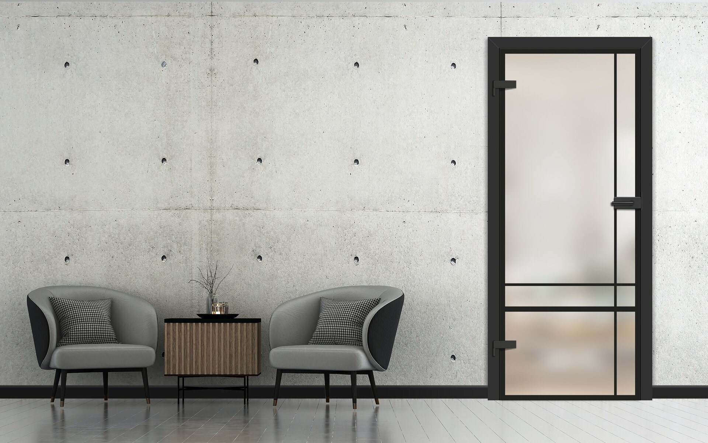
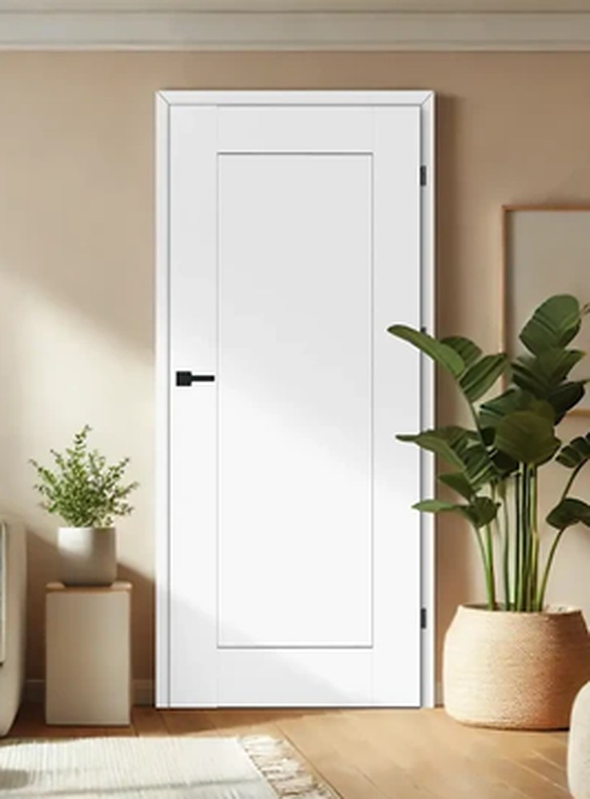
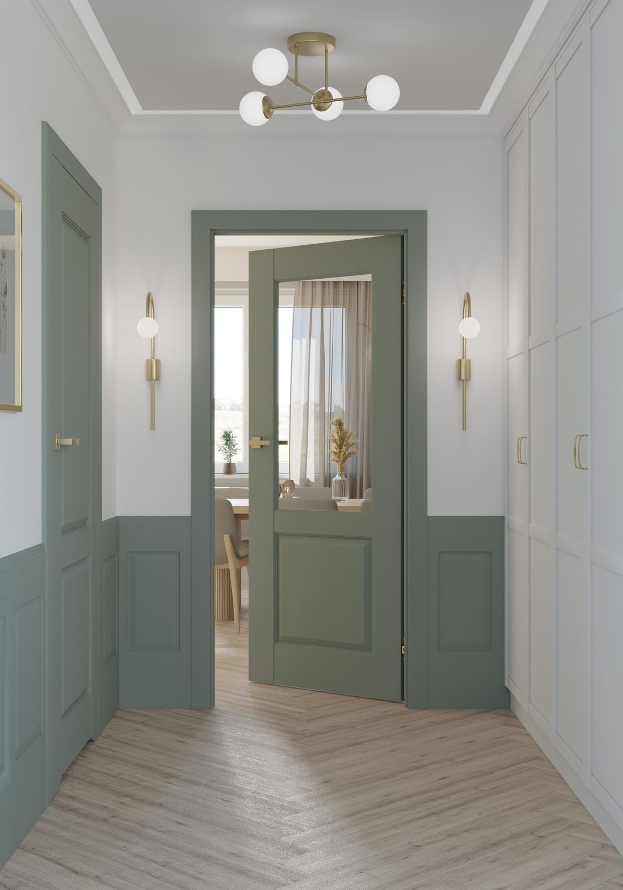
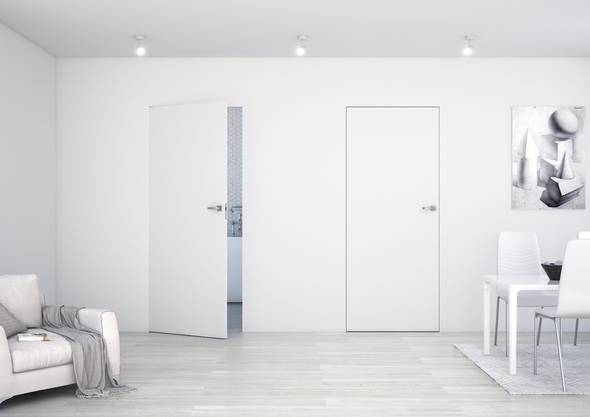
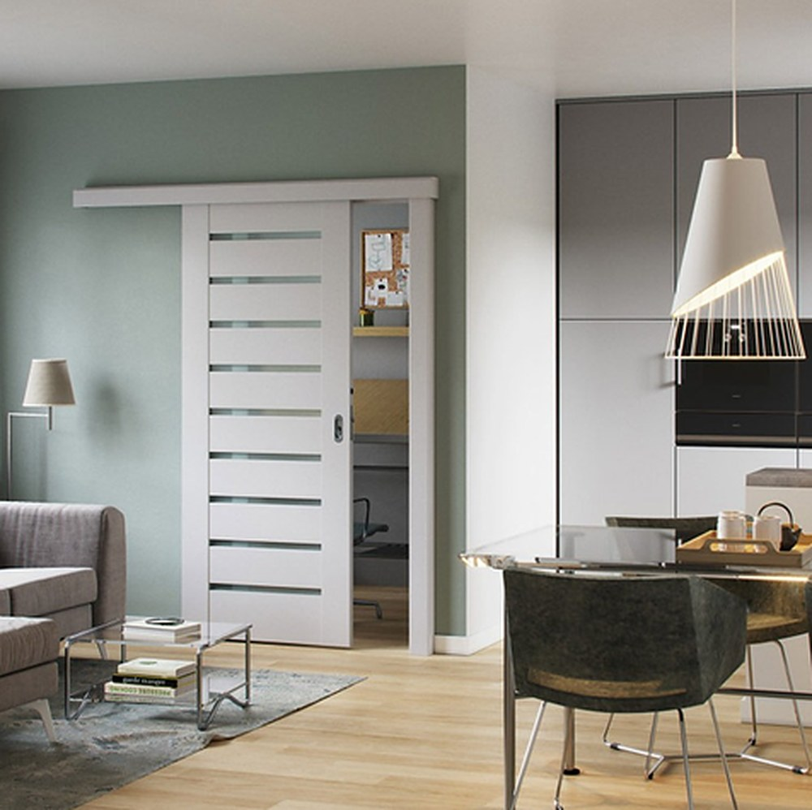
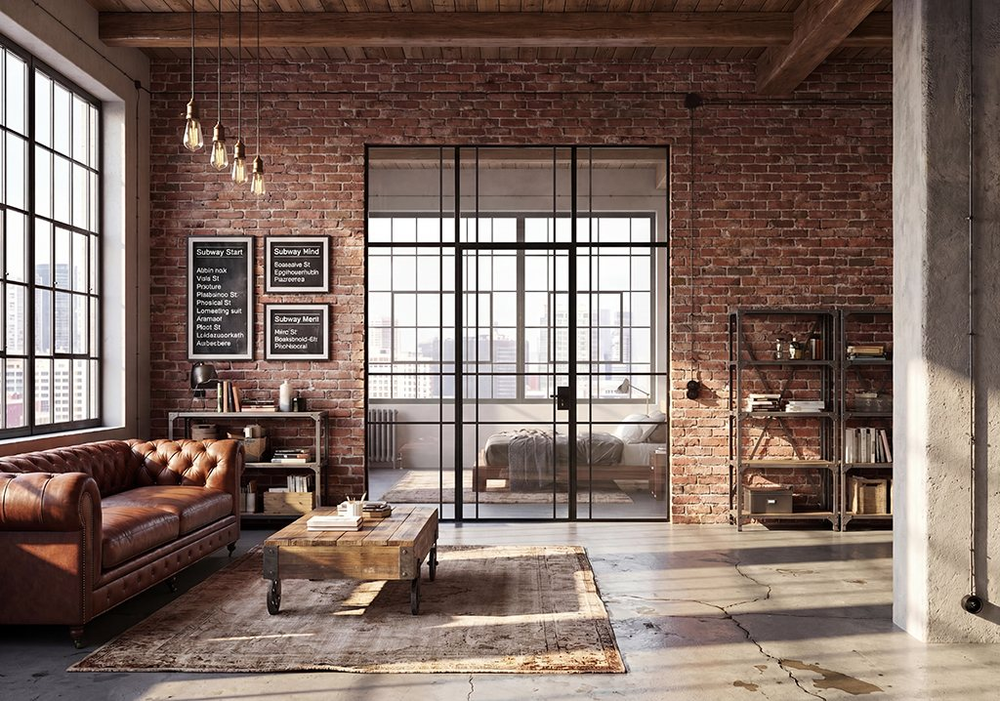

Szeroki wybór wzorów, kolorów i przeszkleń, dzięki którym dopasujesz drzwi do swojego domu.





Kolekcje DRE, Porta i Erkado — od klasyki po loft
Drzwi przylgowe, bezprzylgowe, ukryte, przesuwne i szklane
Pomagamy na każdym etapie — od wyboru po montaż
Kolor drzwi warto dopasować do podłogi, ścian i stylu całego wnętrza. Nie musi być identyczny – ważne, aby poszczególne elementy dobrze ze sobą współgrały.
Tak, w zależności od producenta i wybranego modelu istnieje możliwość zamówienia drzwi w niestandardowym kolorze lub wykończeniu. Dostępne opcje obejmują różne odcienie, dekory drewnopodobne oraz wybrane kolory z palety RAL. Zakres personalizacji zależy od konkretnej kolekcji, dlatego warto sprawdzić dostępne możliwości przed złożeniem zamówienia.
Tak, oferujemy możliwość pomiaru i montażu drzwi. Pomagamy na każdym etapie – od wyboru odpowiedniego modelu i dopasowania ościeżnicy, po ustalenie szczegółów montażu. Dzięki temu masz pewność, że drzwi będą dobrze dopasowane do otworu i przygotowane do prawidłowego użytkowania.
Skontaktuj się z nami — doradzimy technicznie i przygotujemy kalkulację cenową.